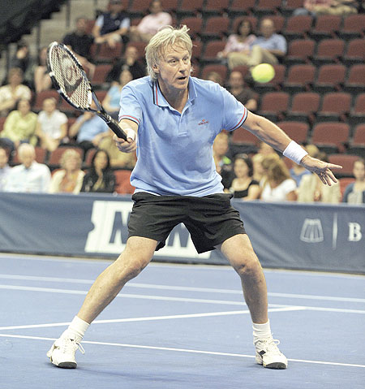
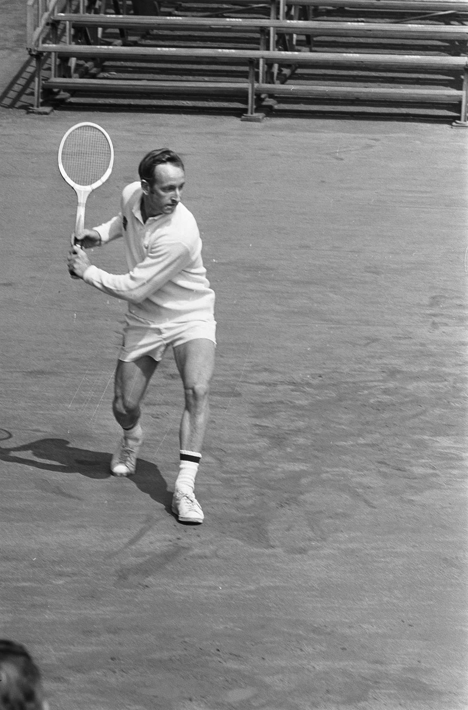
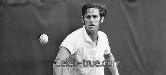
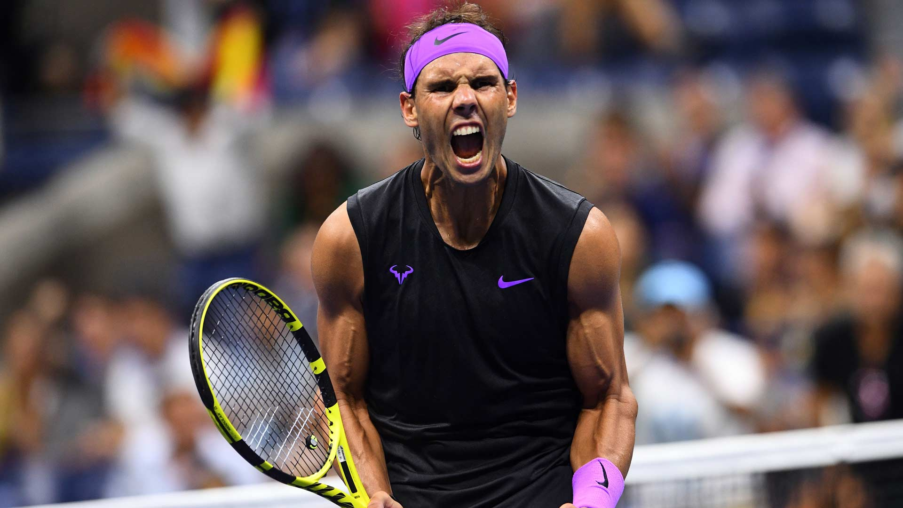
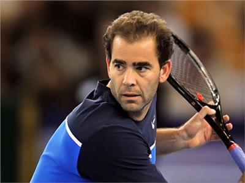
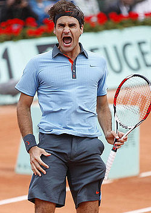
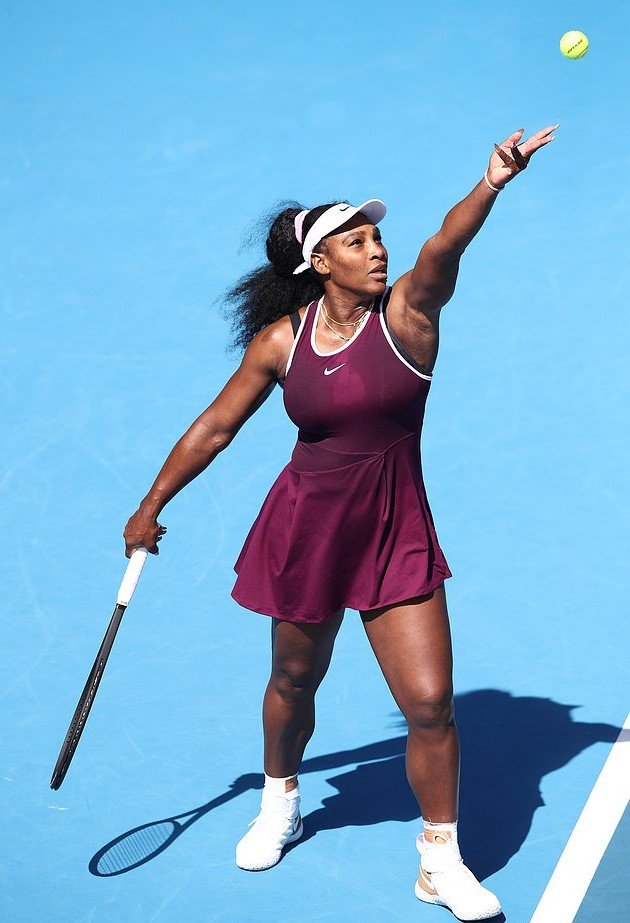
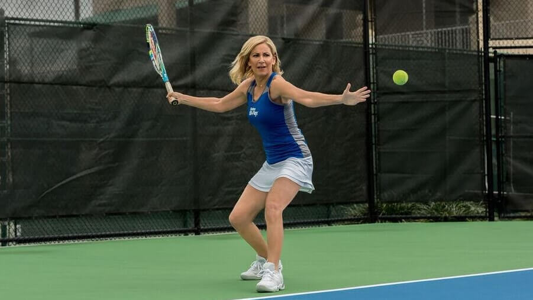
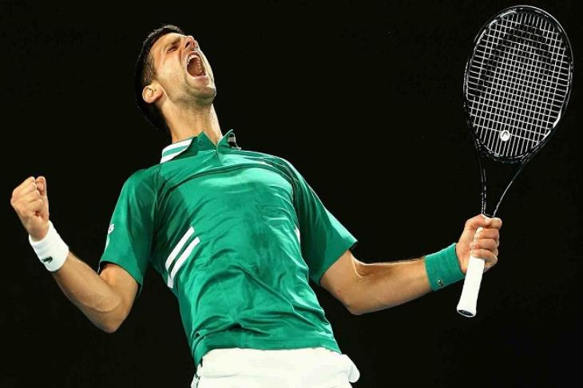

Björn Borg:
Björn Rune Borg (Swedish pronunciation: [ˈbjœːɳ ˈbɔrj] (About this soundlisten); born 6 June 1956) is a Swedish former world No. 1 tennis player. Between 1974 and 1981, he became the first man in the Open Era to win 11 Grand Slam singles titles (six at the French Open and five consecutively at Wimbledon), but he never won the US Open despite four finals appearances. He is the first male player to win five Wimbledon titles in the Open Era. Borg won four consecutive French Open titles (1978–81) and is 6–0 in French Open finals, the fourth-best record at a Grand Slam behind Pete Sampras (7-0 at Wimbledon finals), Novak Djokovic (9-0 at Australian Open finals) and Rafael Nadal (13-0 at French Open finals). He is one of two male players, along with Roger Federer, to appear in French Open and Wimbledon finals for four consecutive years (1978–81) and the only man to win both of them in three consecutive years (1978–80).

Rod Laver:
Rodney George Laver AC MBE (born 9 August 1938) is an Australian former tennis player. He is widely regarded by many pundits, players and fans to be one of the greatest tennis players of all time. Laver was ranked world No. 1 in nine different years, which is an all-time record in tennis. He was the No. 1 ranked professional from 1964 to 1970, spanning four years before and three years after the start of the Open Era in 1968. He also was the No. 1 ranked amateur in 1961–62.[3] He is the second and last male player to win each grand slam twice after Roy Emerson. Laver's 200 singles titles are the most in tennis history. This included his all-time men's record of 10 or more titles per year for seven consecutive years (1964–70). He excelled on all of the court surfaces of his time: grass, clay, hard, carpet, and wood/parquet.

Roy Emerson:
Roy Stanley Emerson AC (born 3 November 1936) is an Australian former tennis player who won 12 Grand Slam singles titles and 16 Grand Slam doubles titles, for a total of 28 Grand Slam tournament titles. He is the only male player to have completed a career Grand Slam (winning titles at all four Grand Slam events) in both singles and doubles, and the first of two men (the other being Rod Laver) to have completed a double career Grand Slam in singles. His 28 major titles are the all-time record for a male player. In 1964, 1965, and 1967 he was ranked world No. 1. Emerson was the first male player to win 12 majors. He held that record for 30 years until it was passed by Pete Sampras in 2000 and later by Federer, Nadal and Djokovic. He also held the record of six Australian Open men's singles titles until 2019 when Novak Djokovic won his seventh title. Emerson won five of them consecutively (1963–67), a record still unbroken to this day. Emerson is one of only five tennis players all-time to win multiple slam sets in two disciplines, only matched by Frank Sedgman, Margaret Court, Martina Navratilova and Serena Williams.

Rafael nadal:
Rafael "Rafa" Nadal Parera (Catalan: [rəf(ə)ˈɛl nəˈðal pəˈɾeɾə], Spanish: [rafaˈel naˈðal paˈɾeɾa];[5] born 3 June 1986) is a Spanish professional tennis player. He is ranked world No. 3 by the Association of Tennis Professionals (ATP), has been ranked No. 1 in the ATP rankings for 209 weeks, and has finished as the year-end No. 1 five times. Nadal has won 20 Grand Slam men's singles titles, an all-time record shared with Roger Federer, and 36 Masters 1000 men's singles titles, an all-time record shared with Novak Djokovic. His 13 French Open titles in particular are a record at any tournament. Nadal's dominance on clay is also highlighted by 62 of his 88 ATP singles titles coming on the surface, including 26 of his 36 ATP Masters titles, and his 81 consecutive wins on clay is the longest single-surface win streak in the Open Era. From childhood through most of his professional career, Nadal was coached by his uncle Toni. He was one of the most successful teenagers in ATP Tour history, reaching No. 2 in the world at age 19 and winning 16 titles, including his first French Open and six Masters events. Nadal became No. 1 for the first time in 2008 after his first major victory off clay against the longtime top-ranked Federer, his main rival through 2010, in a historic Wimbledon final. He also won an Olympic gold medal in singles that year in Beijing, and then completed the career Grand Slam at the 2010 US Open in the only year where he won three majors. With his Olympic gold medal, he is also one of only two male players to complete the career Golden Slam.

Pete Sampras:
Petros "Pete" Sampras (Greek: Πέτρος "Πητ" Σάμπρας; born August 12, 1971) is an American former professional tennis player. His professional career began in 1988 and ended at the 2002 US Open, which he won, defeating longtime rival Andre Agassi in the final; he is the only man in the Open Era to have won the final Grand Slam tournament at which he competed. Sampras won 14 Grand Slam singles titles during his career, which was an Open Era record at the time of his retirement: seven Wimbledon, two Australian Opens and a joint Open Era record five US Open titles. He won 64 singles titles in total. He first reached world No. 1 in 1993, and held that position for a total of 286 weeks (third all time), including an Open Era record of six consecutive year-end No. 1 rankings from 1993 to 1998. A right-handed player with a single-handed backhand, his precise and powerful serve earned him the nickname "Pistol Pete". In 2007, he was inducted into the International Tennis Hall of Fame.

Roger Federer:
Roger Federer (German: [ˈrɔdʒər ˈfeːdərər]; born 8 August 1981) is a Swiss professional tennis player. He is ranked No. 8 in the world by the Association of Tennis Professionals (ATP). He has won 20 Grand Slam men's singles titles, an all-time record shared with Rafael Nadal. Federer has been world No. 1 in the ATP rankings a total of 310 weeks – including a record 237 consecutive weeks – and has finished as the year-end No. 1 five times. Federer has won 103 ATP singles titles, the second-most of all-time behind Jimmy Connors and including a record six ATP Finals. Federer has played in an era where he dominated men's tennis together with Rafael Nadal and Novak Djokovic, who have been collectively referred to as the Big Three and are widely considered three of the greatest male tennis players of all-time.[c] A Wimbledon junior champion in 1998, Federer won his first Grand Slam singles title at Wimbledon in 2003 at age 21. In 2004, he established himself as the best player in men's tennis by winning three out of four major singles titles and the ATP Finals,[d] a feat he repeated in 2006 and 2007. From 2005 to 2010, Federer made 18 out of 19 major singles finals. During this span, he won his fifth consecutive titles at both Wimbledon and the US Open. He completed the career Grand Slam at the 2009 French Open after three previous runner-ups to Nadal, his main rival up until 2010. At age 27, he also surpassed Pete Sampras's then-record of 14 Grand Slam men's singles titles at Wimbledon in 2009.

Serena Williams:
Serena Jameka Williams (born September 26, 1981)[1] is an American professional tennis player and former world No. 1 in women's single tennis. She has won 23 Grand Slam singles titles, the most by any player in the Open Era, and the second-most of all time behind Margaret Court (24). The Women's Tennis Association (WTA) ranked her world No. 1 in singles on eight separate occasions between 2002 and 2017. She reached the No. 1 ranking for the first time on July 8, 2002. On her sixth occasion, she held the ranking for 186 consecutive weeks, tying the record set by Steffi Graf. In total, she has been No. 1 for 319 weeks, which ranks third in the Open Era among female players behind Graf and Martina Navratilova .Williams is widely regarded to be one of the greatest tennis players of all time.[a] She holds the most Grand Slam titles in singles, doubles, and mixed doubles combined among active players. Her 39 Grand Slam titles put her joint-third on the all-time list and second in the Open Era: 23 in singles, 14 in women's doubles, and two in mixed doubles. She is the most recent female player to have held all four Grand Slam singles titles simultaneously (2002–03 and 2014–15) and the third player to achieve this twice, after Rod Laver and Graf. She is also the most recent player to have won a Grand Slam title on each surface (hard, clay and grass) in one calendar year (2015). She is also, together with her older sister Venus, the most recent player to have held all four Grand Slam women's doubles titles simultaneously (2009–10).

Chris Evert:
Christine Marie Evert (born December 21, 1954), known as Chris Evert Lloyd from 1979 to 1987, is an American former world No. 1 tennis player. She won 18 Grand Slam singles championships and three doubles titles. She was the year-ending world No. 1 singles player in 1974, 1975, 1976, 1977, 1978, 1980, and 1981. Overall, Evert won 157 singles championships and 32 doubles titles. Evert reached 34 Grand Slam singles finals, more than any other player in the history of professional tennis. She holds the record of most consecutive years (13) to win at least one Grand Slam title. In singles, Evert reached the semifinals or better in 52 of the 56 Grand Slams she played, including the semifinals or better of 34 consecutive Grand Slams entered from the 1971 US Open through the 1983 French Open.[5] Evert never lost in the first or second round of a Grand Slam singles tournament and lost in the third round only twice. In Grand Slam women's singles play, Evert won a record seven championships at the French Open and a co-record six championships at the US Open (tied with Serena Williams). Evert's career winning percentage in singles matches of 89.97% (1309–146) is the highest in the history of Open Era tennis, for men or women. On clay courts, her career winning percentage in singles matches of 94.55% (382–22) remains a WTA record.
